I build AI/ML systems that solve real problems, from detecting ransomware to diagnosing CPU failures to saving engineering teams hundreds of hours.
Currently finishing my M.S. in Data Science at Columbia University, where I apply statistical analysis and ML to clinical research. Previously a Software Engineer at Dell Technologies, where I earned a patent, contributed to MLPerf open source, and explored quantum computing research. My range across software engineering, ML, data science, and statistical research is where curiosity took me.
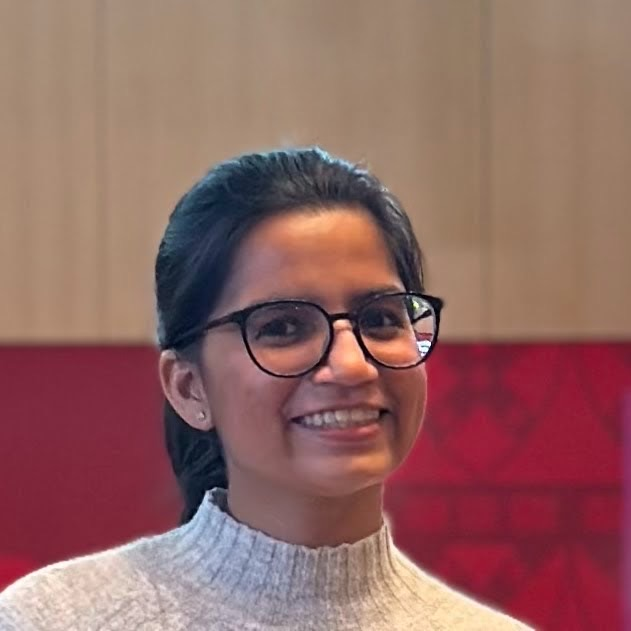
Three years building production ML at enterprise scale, now bringing that rigor to data science research.
Developing an end-to-end Random Forest predictive analytics pipeline on 700K+ child welfare records to identify children at risk of severe harm within 24 months.
Built an explainable AI framework using SHAP, LIME, Anchors, PDP, and ALE, with calibration and conformal prediction to improve model transparency and reliability.
Evaluated and optimized model performance using ROC-AUC, PR-AUC, hyperparameter tuning, and scalable automated workflows, delivering actionable insights for child welfare decision making.
Built a Python-based statistical analysis pipeline for a clinical orthodontics study, automating hypothesis testing, multivariable regression, and ICC-based reliability validation, identifying treatment duration as the primary predictor of post-treatment occlusal outcomes.
TA for two sections of Calculus; graded weekly work for 100+ students and held regular office hours.
Authored a container orchestration standardization proposal adopted in MLPerf Storage v2023.2.0; integrated benchmarks into Dell pipelines, cutting validation time 60% and saving 400+ hours per product team across a $4B storage portfolio.
Developed QPERT, an explainability framework for Quantum Circuit Learning, building hybrid quantum-classical pipelines in Qiskit with SHAP/LIME explainability and causal ablation studies.
Built FastPass, an ML-driven CI/CD test prioritization algorithm integrated with GitHub that reduced developer testing time by 99.9% and saved $500K+ annually by eliminating 100+ hours/month of hardware usage.
Pioneered CPat, a patented ML algorithm with a real-time performance insights API detecting CPU degradation across thousands of threads that cut root-cause analysis by ~1 week per issue, delivering $1M+ annual efficiency gains.
Developed UnTice, an NLP & GenAI-driven error diagnosis algorithm contextualizing complex storage array errors, delivering $500K+ annual savings.
Built an ML model using multivariate sensor data to predict ransomware across 13 storage products, enabling real-time threat monitoring.
CS Pathways: built educational apps for 3 middle school curricula, taught 200+ students to build community-service apps. ChemAIstry: developed an ML model and interactive website teaching K-8 students about AI. Published at SIGCSE, CHI, FIE, and HCXAI.
A mix of agentic AI, applied ML, and open-source work. More on GitHub.
Columbia MS capstone project building an agentic AI system: autonomous agents that plan, reason, and execute multi-step tasks.
An LLM-powered agent that performs end-to-end data analysis, ingesting datasets, running statistical analysis, and generating insights autonomously.
A retrieval-augmented (RAG) chatbot that answers questions grounded in domain-specific documents using vector search and LLMs.
Contributor to the MLPerf™ Storage Benchmark Suite (MLCommons). Authored a container orchestration standardization proposal adopted in v2023.2.0.
ML algorithm with a real-time performance insights API detecting CPU degradation across thousands of threads. US patent: "Using Thread CPU Utilization Patterns to Analyze Storage Node Performance Problems."
Explainability framework for Quantum Circuit Learning that identifies minimal feature perturbations driving class shifts, built on Qiskit with SHAP/LIME and causal ablation.
Acounterfactual explainability framework for quantum machine learning that generates faithful and interpretable explanations for quantum models.
NSF-funded interactive tool teaching K-8 students to train ML models on objects safe for a chemistry lab. Published at SIGCSE 2024.
Statistical analysis pipeline for a Columbia clinical orthodontics study: hypothesis testing, multivariable regression, ICC reliability validation, and publication-ready reporting.
Real-time face recognition system built with OpenCV and Python.
I've spoken to 700+ students and professionals about AI careers, patents, and responsible tech, and I make time to keep learning at conferences too.
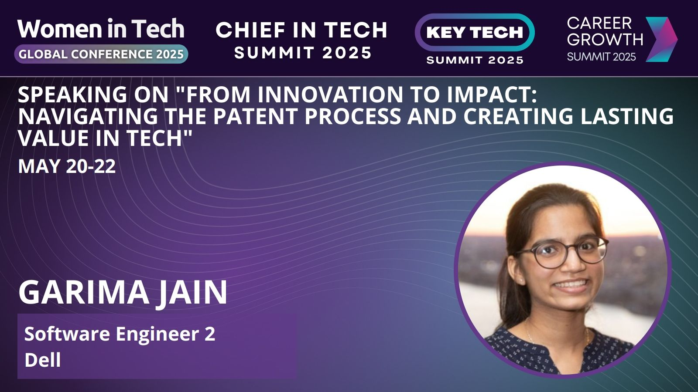
"From Innovation to Impact: Navigating the Patent Process and Creating Lasting Value in Tech."
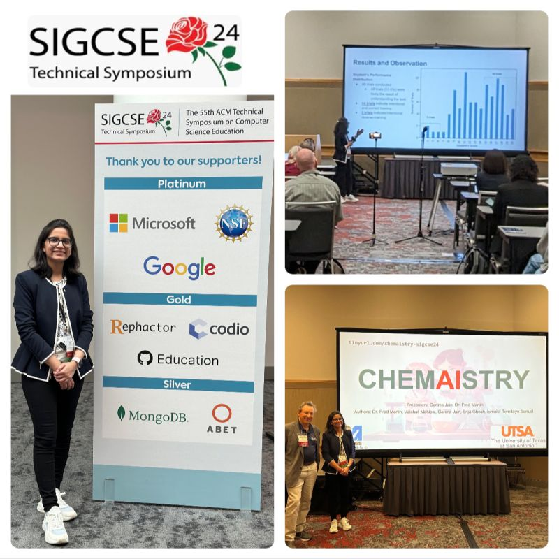
Presented ChemAIstry, our NSF-funded tool for teaching K-8 students how ML models are trained. Also presented CS Pathways at FIE 2022.
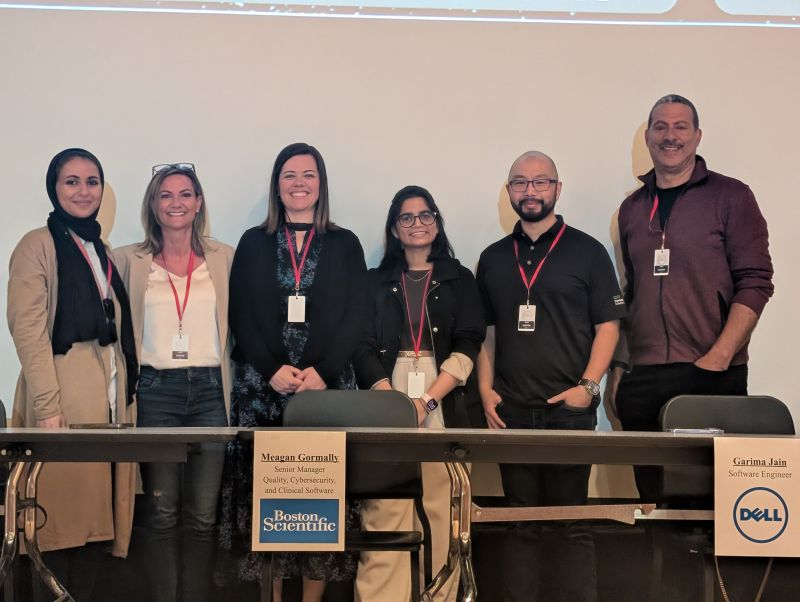
Spoke to 150+ freshman students about computer science careers, representing Dell Technologies.
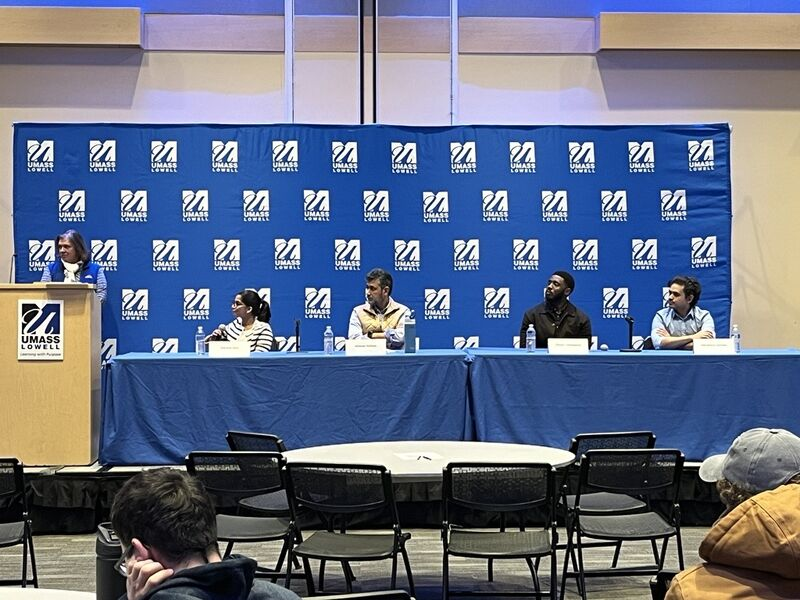
Returned to my alma mater to coach the next generation of tech talent on acing technical interviews.
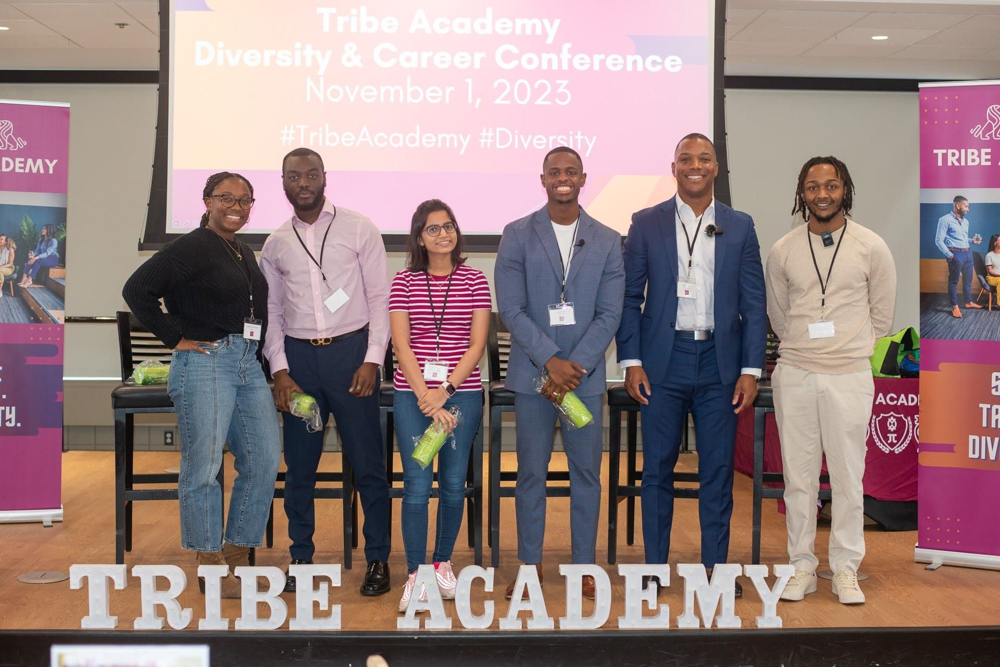
Early Career Panel speaker two years running, sharing my journey with 200+ early-career professionals and students.
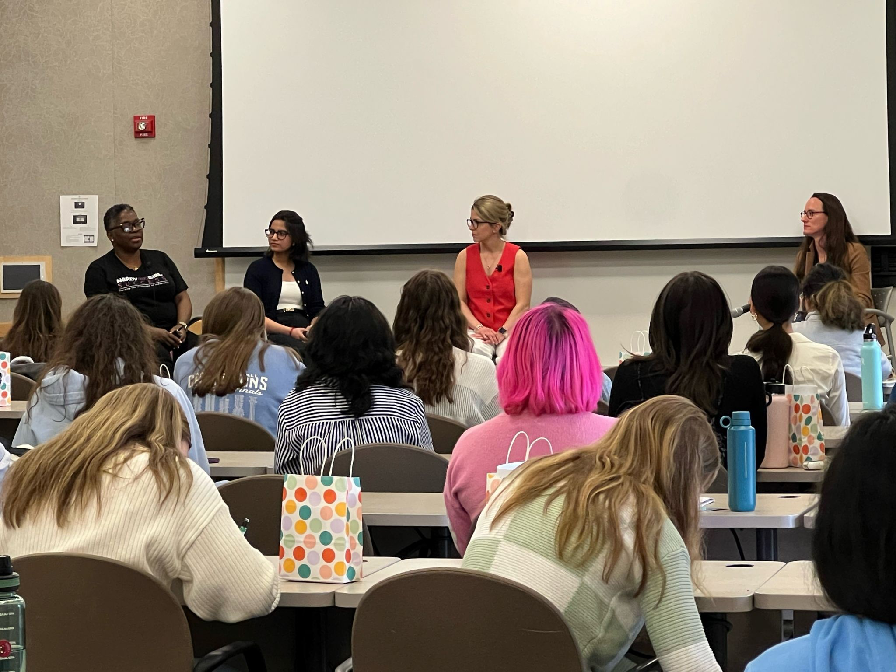
Spoke with aspiring young women and future leaders about careers in tech and leadership.
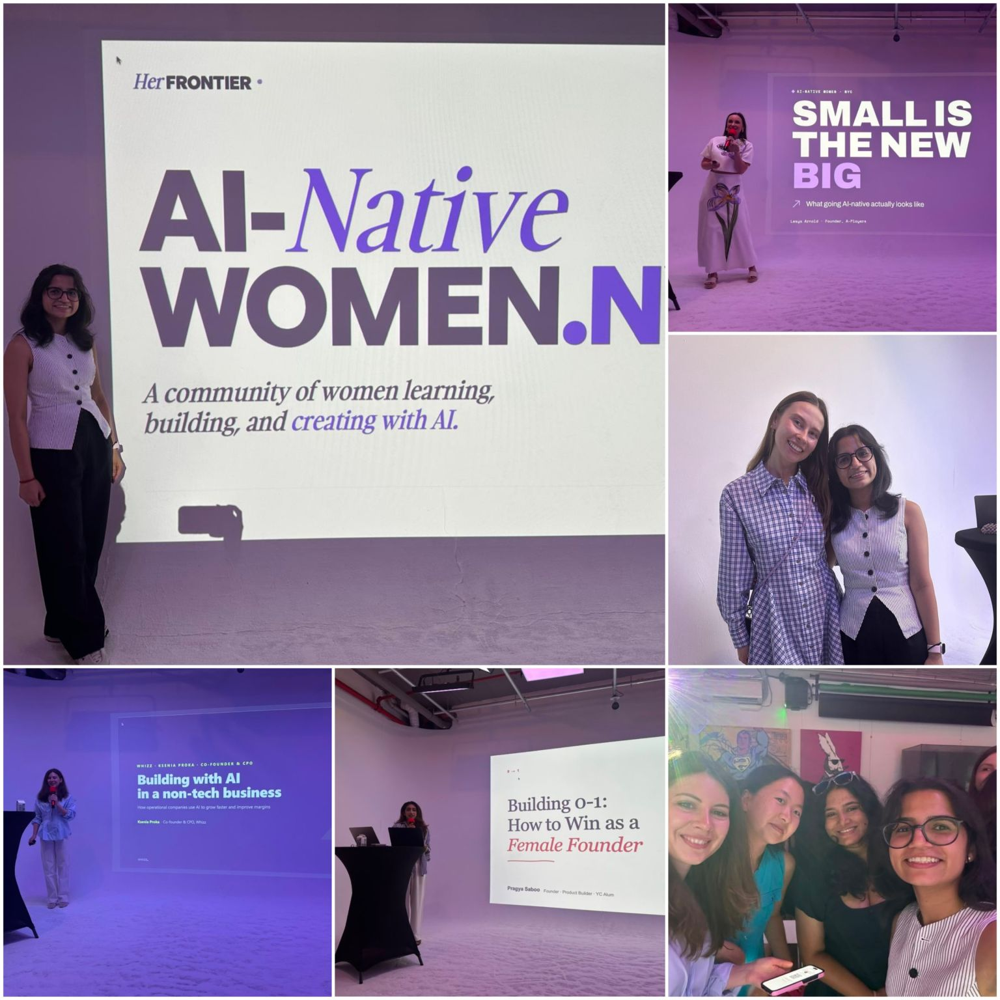
"Build, Operate, Influence", a community of women learning, building, and creating with AI.
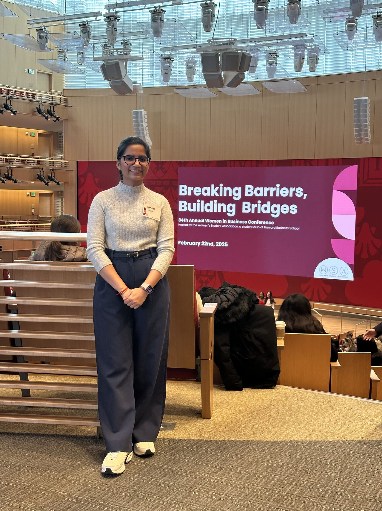
34th Annual conference: "Breaking Barriers, Building Bridges." Also attended IBM's Quantum Industry Webinar on the path to quantum advantage in optimization (2026).
Building fast, winning awards.
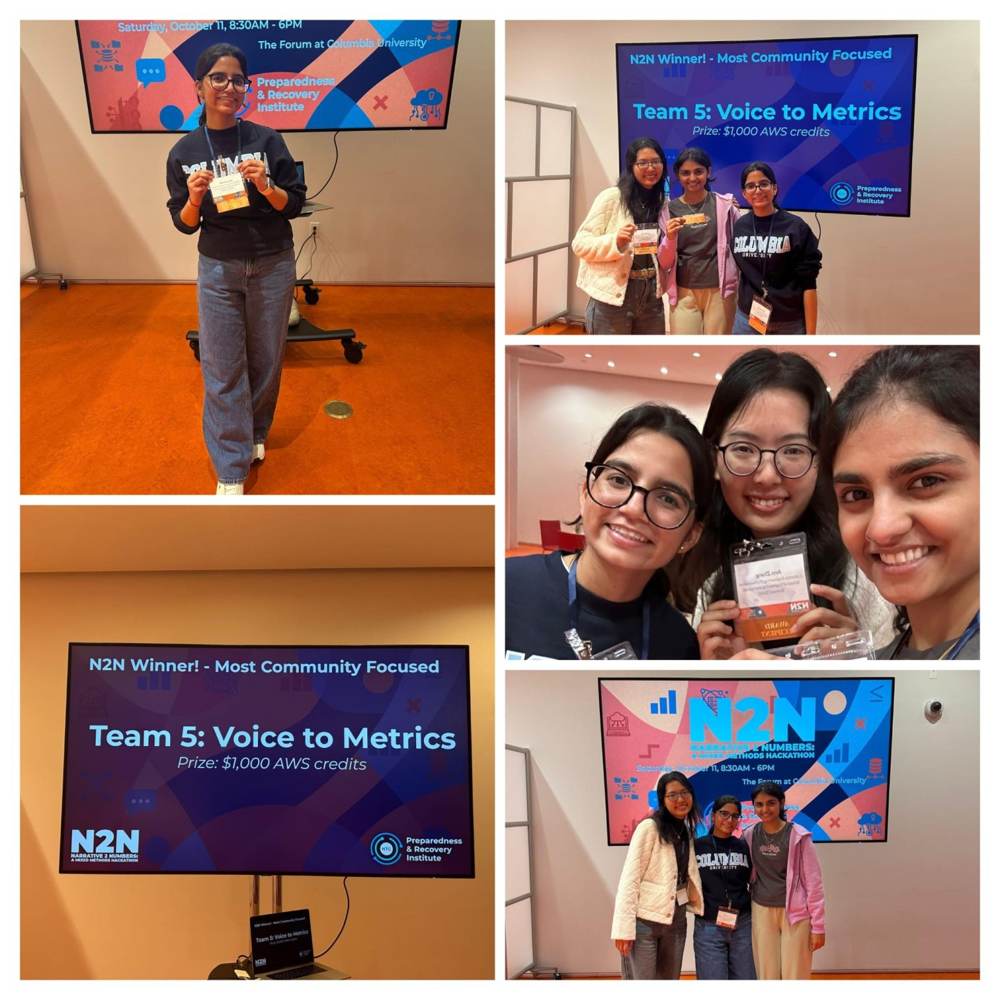
Won the Most Community-Focused track with Voice to Metrics, turning community narratives into actionable data.
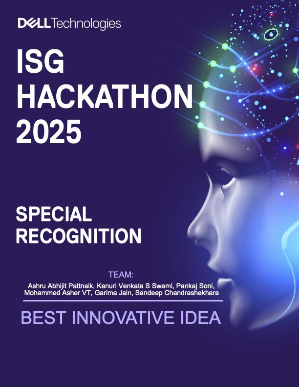
Won "Best Innovative Idea" among teams across Dell's Infrastructure Solutions Group.
Professional certifications, clinical research training, and $43K+ in scholarships and awards.
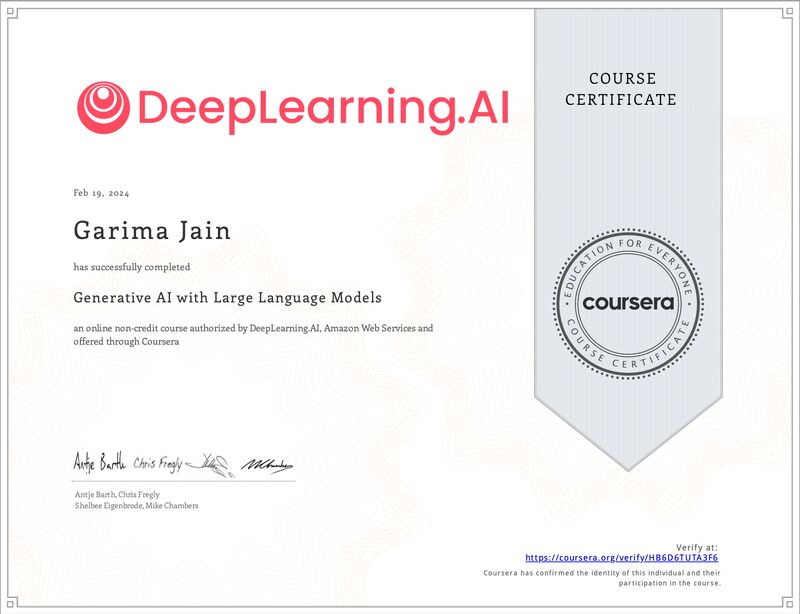
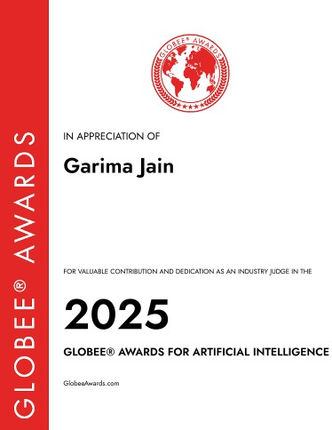
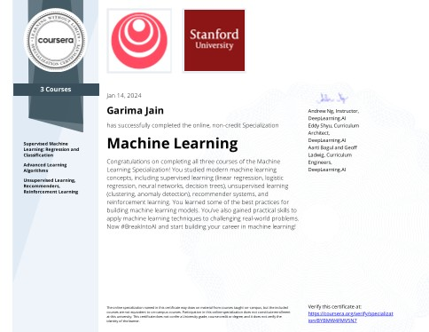
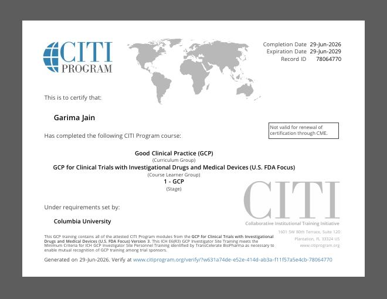
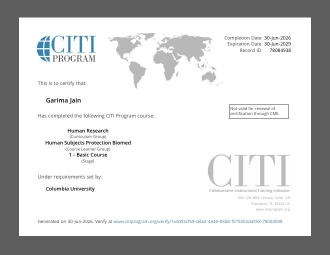
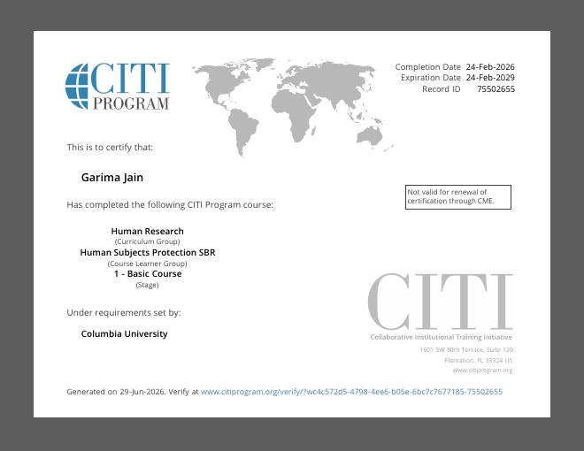
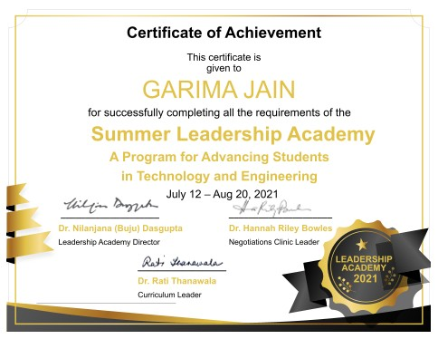
Peer-reviewed research across AI education, human-centered AI, and time series, plus one US patent. Full list on Google Scholar.
The toolkit behind the work.
I'm looking for roles in AI/ML Engineering, Data Science, or Software Engineering where breadth is an asset. Also open to speaking on AI careers and responsible tech.